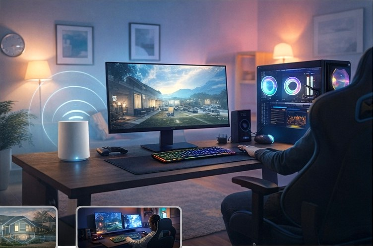

Network‑focused gaming & streaming
Stable beats “fast.”
Most lag spikes are caused by congestion and poor placement — not your plan. Optimize for stability.

Quick wins (do these first)
- Prefer wired for console/PC whenever possible (Ethernet removes Wi‑Fi jitter).
- Use 5 GHz/6 GHz for the gaming device; keep 2.4 GHz for smart gadgets.
- Move closer + higher: line‑of‑sight helps more than most people expect.
- Prioritize traffic: enable QoS / “gaming” mode if your router supports it.
Latency is the delay. You feel it in fast shooters and timing games.
Jitter is inconsistency. It causes “random” spikes even on fast plans.
Bufferbloat happens when uploads clog the line — QoS can fix it.
Stable beats “fast” (what to optimize)
Most lag isn’t caused by your internet plan. It’s usually caused by congestion and poor placement. Your goal is stable latency:
- keep the gaming device on a clean 5 GHz/6 GHz signal,
- reduce competing traffic (uploads),
- prioritize game packets with QoS.
Home-friendly setup checklist
- Schedule updates/backups for overnight.
- If you stream + game, use wired for the streaming PC/console when possible.
- Turn off unused “guest networks” if they cause device confusion.
Recommended picks for gaming & streaming
These recommendations are based on real-world performance, stability, and typical home use cases.
Affiliate note: Links may be affiliate links. If you buy, I may earn a commission at no extra cost to you.
Budget / reliable pick
Great for stable coverage without paying for features you won’t use.
Mid‑range performance pick
More headroom for busy homes and better handling under congestion.
Best‑for‑gaming stability pick
Focuses on latency consistency (jitter control) instead of raw “speed.”